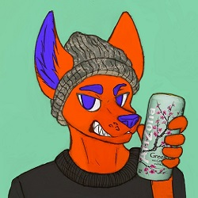

vorecannibal
Aggressive, loud and abraisive noise rap
Born and raised in the united states, vorecannibal brings to the table aggressive, loud and abraisive
noise rap. Getting his start with mashup music, cannibal ventured into original compositions in 2015, and
has been tirelessly working on his debut mixtape, "Pills Like White Elephants" ever since. Cannibal's
bizarre and violent flow tears through noisey landscape after noisey landscape, featuring his own beats
as well as beats crafted by the likes of Equinox7, JamKamme and Enterfant.